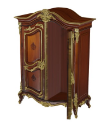
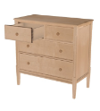
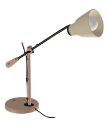
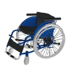
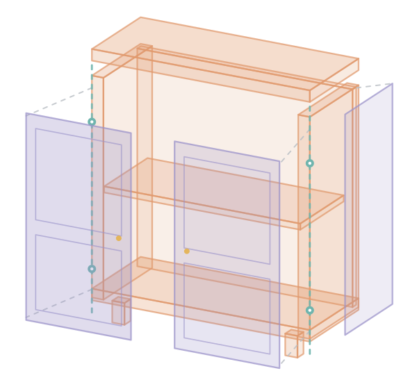
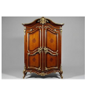
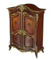
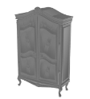

01
Understand
Read the image and task. Identify the movable parts, their relationships, and joint types.




Placeholder imagery from the paper · static screenshots, not live demos
Generated appearance. Programmed structure.
Task-driven motion.
Website template · final text, figures, and results pending

SPARK jointly generates the part meshes of a coherent articulated object using a diffusion model guided by VLM-inferred structure. SPARK+ takes a different approach: combine a generated appearance shell with agent-written CAD for part structure, hidden interiors, and collision geometry. A task sentence guides what needs to move, while geometric checks guide how the parts fit and articulate.
“Open both doors” specifies the required interaction. The task guides which parts need to move and their joint types.
Keep the detailed exterior. Write and repair CAD for hidden interiors, part structure, and collision bodies against shell measurements.
Search hinge pivots to reduce penetration and detachment during motion. Use contact and opening priors to help determine limits.
Placeholder copy · contributions summarized from the supplied draft
Both aim to produce articulated assets. What changes is how the geometry and motion are built.
| Design choice | SPARK | SPARK+ |
|---|---|---|
| Input | One image. A VLM infers parts and an initial articulation structure. | One image + a task. The requested interaction guides the moving parts and joint types. |
| Geometry | Jointly generate the parts. A diffusion model jointly synthesizes part meshes that form a coherent articulated object, guided by images and VLM-inferred structure. | Combine a shell with CAD. Preserve generated appearance and program the hidden geometry and collision bodies. |
| Joint refinement | Match a predicted open state. Differentiable rendering adjusts joint parameters against a VLM-generated reference image. | Search on the hybrid geometry. Score hinge candidates for penetration and detachment; derive limits using contact and opening priors. |
Placeholder copy · method comparison
Generated appearance and programmed geometry, connected in one pipeline.
Read the image and task. Identify the movable parts, their relationships, and joint types.
Generate the shell. Write and repair CAD components against measurements of its geometry.
Refine seams, cut and stitch the parts, then search hinge pivots and determine motion limits.
Export URDF and textured links. Check geometry, joint motion, and the requested task.
The CAD agent plans components, writes them in parallel, clips them against the shell, and repairs the components responsible for failed checks.
Figure 4 · CAD agent sequencePlaceholder — original figure or process video to be added.
Paper-image placeholders showing the input, generated mesh, CAD baseline, and hybrid result.



Placeholder · static crops from draft Figure 6. These controls switch paper images; they do not run a reconstruction or simulation.
Three joint types described in the draft, illustrated with paper-image placeholders.
Show the hinge, the door’s path, and the interior it reveals.
Show the drawer box, cabinet cavity, and available travel.
Add a rotation clip so the motion is visible beyond a still image.
Placeholder · replace these paper crops with exported motion clips